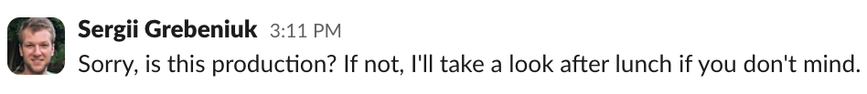
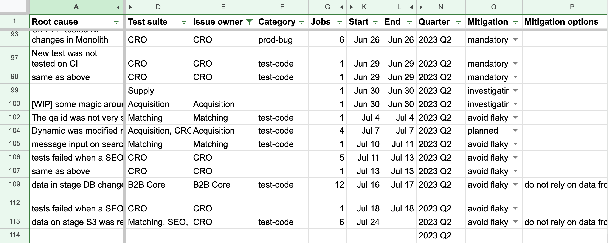
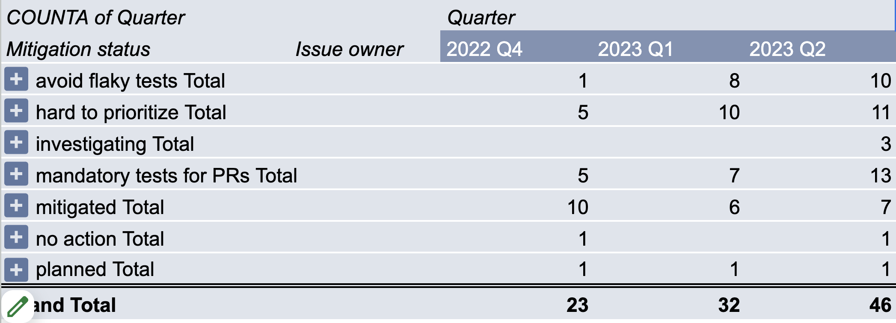
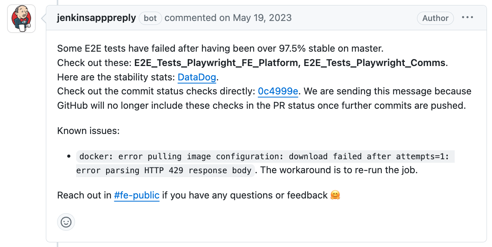

🇺🇦 Sergii Grebeniuk
- Definition of Done
- Challenges
- Solutions
- Q&A
Definition of Done
- Verify every deployment
-
Cross-service
Cross-stack
-
The most important user journeys
Happy paths
-
Playwright
100 suites
What this is not about
- Mock 3rd-party services
- Mock in-house services
- Only test the changing functionality
What this is about
- Who does What by When
- Who does What by When in
Which Case
Challenges
- 😊 All tests pass in 98% cases
- 🙂 All tests pass in 90% cases
- 😐 All tests pass in 80% cases
- 😞 <80% = 0%
-
14 runs per day:
- 1 failure → 92% daily stability
- 2 failures → 97% weekly stability
- 7 failures → 97% monthly stability
- Test stability = test stability × app stability
-
- App stability =
-
product features' stability × ...
staging infra stability × ...
3rd-party components' stability × ...
| Production |
E2E Tests |
| SEV-1 incidents affect all users |
Every failure affects everyone
|
| SEV-2-SEV-4 incident affect some users |
| Bugs are not incidents |
- Little room for error
- Many moving parts
- Blast radius
Solutions
Increase urgency

Increase urgency
Analyze every failure
Analyze every failure

Analyze every failure

Make accountable people from the entire stack
Educate
Assign senior engineers
Increase visibility

Start small
and never go too big 🙂
- Inrease urgency
- Analyze every failure
- Make accountable people from the entire stack
- Educate
- Assign senior engineers
- Increase visibility
- Start small